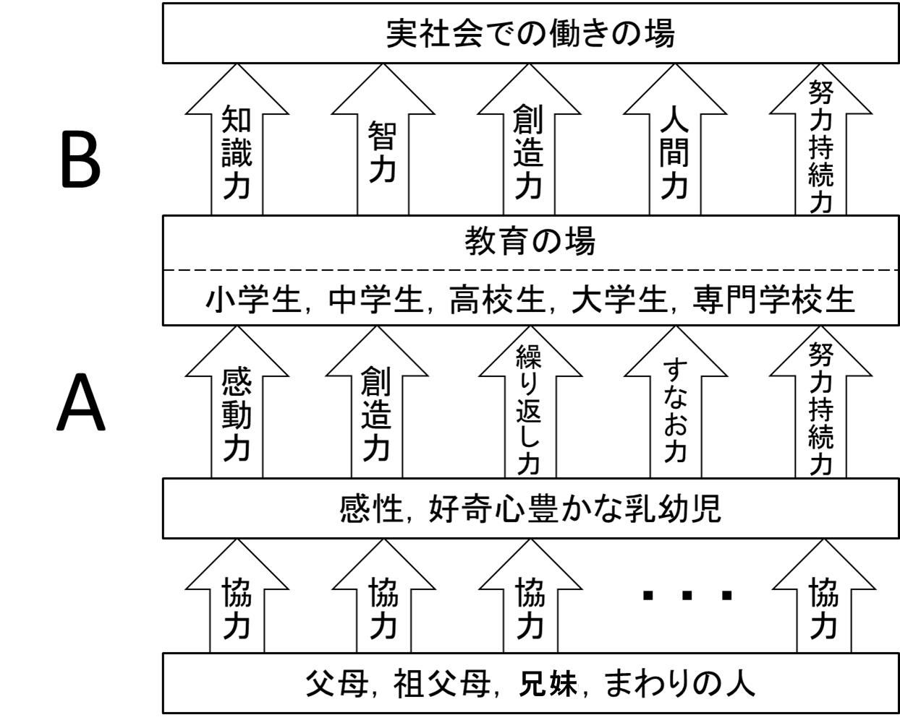
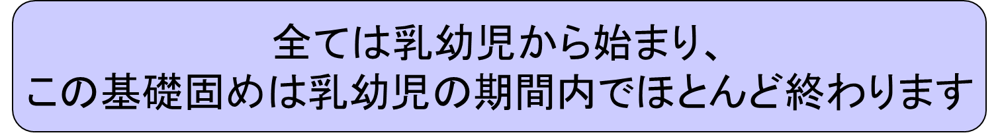
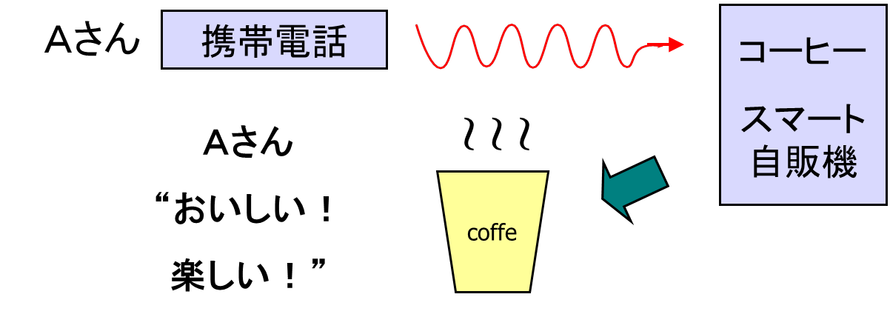
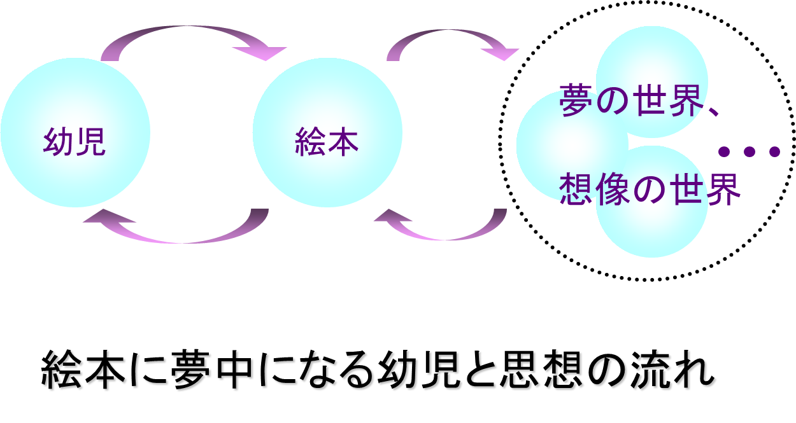
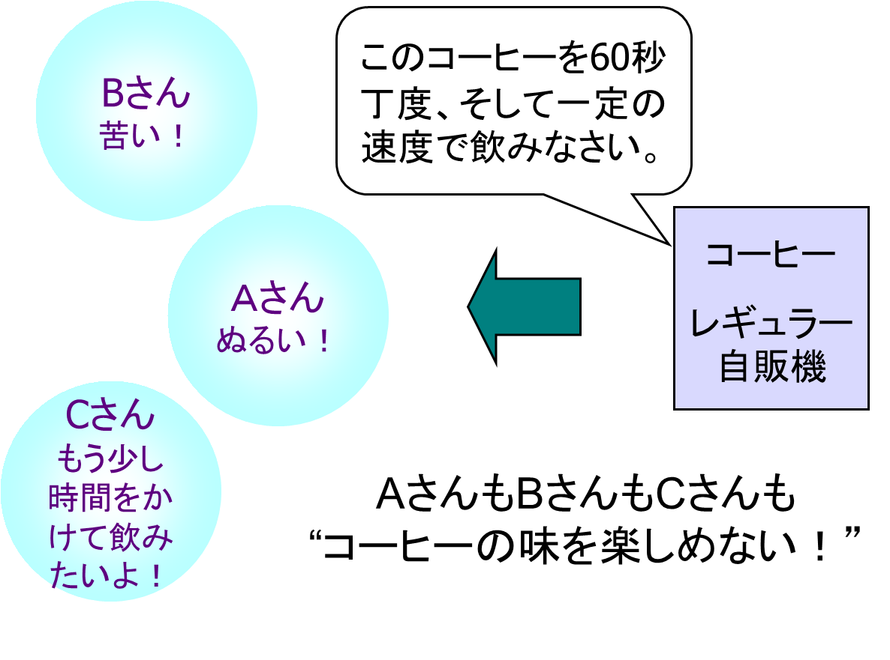
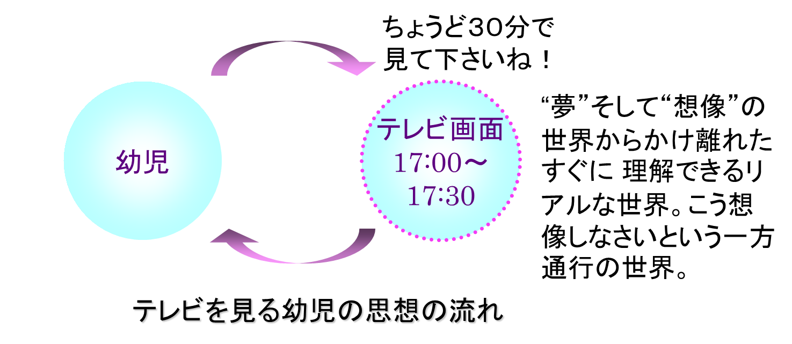

乳幼児の置かれている環境、昔と違います。 全く違います。
テレビ、携帯電話、スマートフォン、インターネット、CD、DVD、育児ロボット、早期教育ソフト・・・私が住んだ乳幼児世界とは全く異なる異次元の世界です。
テレビと絵本の差を考えましょう。乳幼児世代の教育問題を考える上で、最も大切な基本は何でしょうか。それは、絵本とテレビの差を考えることこのことが基本の中の基本でしょう。
ここでコーヒーモデルを紹介しましょう。
コーヒーモデルは絵本とテレビの差を分かりやすく説明してくれます。

１．好みのブランド、濃さ
１．好みの量、温度
１．好みのミルク、砂糖の量

同じ絵本であっても、子供たちは新しい喜びを感じ、新しい夢を見ながら繰り返し繰り返し読みます。お兄さんお姉さんたちが読んだ絵本、近所のお兄さんお姉さんたちが読んだ絵本を回し読みできれば最高ですね。

